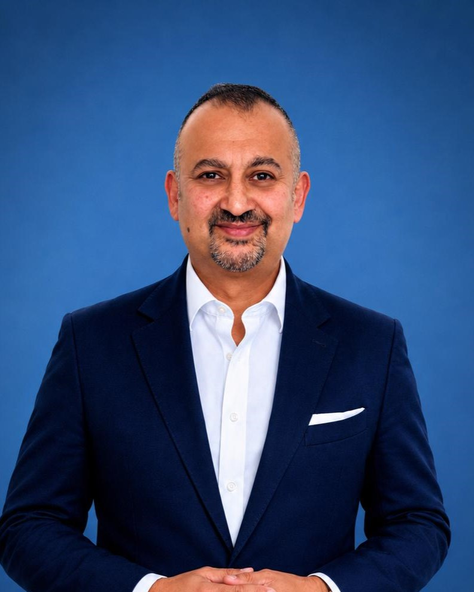

A doctor who has sat in rooms you do not yet know exist.

I failed my first year of medical school and had to repeat the year. I very nearly left medicine altogether. I begin with that because everything I teach about character and growth, I learned as an individual who was initially convinced he did not belong.
I qualified from Imperial College London and spent the next twenty-five years moving between worlds that rarely meet: the ward, the tech world, the boardroom and the negotiating table.
I served as Chief Medical Officer for an NHS system caring for 1.5 million people through the pandemic. I was Global Medical Director at Dell, including leadership of a major engagement across the Gulf. I have sat as a non-executive on NHS boards and as a Trustee of Great Ormond Street Hospital Charity. I mentor future medical leaders at Oxford University. I taught digital health and entrepreneurship at UCL's Global Business School for Health, and I chair Medology, developing the next generation into medicine.
The people I work with are not buying advice. They are investing in an honest, structured conversation with someone who has no stake in the answer - and a plan they own at the end of it.
Why I now advise others
Across all of it, the same pattern held: the people who progressed were rarely the ones who knew the most. They were the ones who could think clearly under pressure, ask better questions, and act while others hesitated.
For medical students finding their footing, for leaders carrying weight they cannot share, and for a small number of families who need counsel they can trust, I bring the same approach to every conversation: diagnose before advising.
- Dr Masood Ahmed
The goal isn't to give you answers. It's to help you ask better questions.